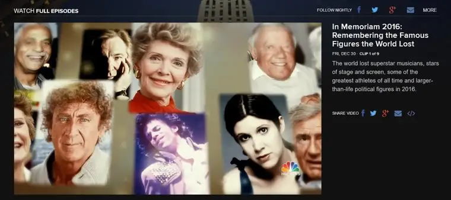

Happy New Year from our family to yours!
Each year at this time, I share my word for the coming year. This is a blogging tradition I began with my friend Mary Aalgaard years ago. All the details are on last year’s post, along with links to past words here.
In fact I just read through last year’s word and reflection myself, and was edified to realize how my chosen word, TRUST, played out in my life in 2016. In light of how much I would ultimately need to trust in God, and how my trust in God grew as a result of that need, the word definitely was a fitting pairing for my lived experiences. I am so grateful for God’s faithfulness, which allows me to have this security. He is such a good Father!
Before I move onto my word for 2017, I need to deal with other aspects of 2016. A lot of folks are grumbling about it, and wishing it to be quickly over. By the time you read this post, it will be. I realize to some extent why people are feeling disillusioned with 2016. It was a tough year in many ways. Politically, division within our country grew, and to make things more bitter, we lost a lot of people; souls who have meant something to a lot of us and are entwined with our experiences and histories (here’s a neat recap by NBC news).

Though I, too, grieve the loss of them and have even been teary in moments, I don’t feel the anger and frustration some are feeling. Yes, their exits leave a void, but as Christians, we look forward even in death, and in these deaths I find a chance to pray for their souls, and celebrate the reality that they have now shed their worldly cares, and, with hope, are on their way to eternal bliss. Perhaps for the first time, they feel valued, not because of who they were on earth or what they did or didn’t accomplish, but because God first loved them into being, and sees them at their core, and calls them “beloved” just because they are. Broken like the rest of us, they need God’s mercy now more than ever, and we can be assured it will be offered. After all, most of them died in, or just after, the Year of Mercy!
And one more thing concerning the passing of these people. In some ways, their leaving brings us together, because no matter our political stance, we are all affected by their loss as we were their presence. We remember that we have in some way, even if at a distance, shared the journey with them. And in that way, they remind us we still share the journey with one another, and ought to be gentle with each other while we can. Let’s resolve to try.
I have tarried long enough. It’s time now for the revealing of my word, which must be preceded by a confession. I am breaking my one-word rule this year and choosing two. But they both start with the same letter, so at least they are linked that way.
My word/s for this year?

Hope was the first word I chose, because we could all use a little more of it, and as much as anything, the words I choose are ones that inspire me and offer a guiding light. Several significant projects will come to fruition this year — including my newest children’s book, “The 12 Days of Christmas in North Dakota,” — and there are a few exciting in-the-works projects I am hopeful about. I’m counting on “hope” to lead me into whatever God has planned for me, keeping last year’s word near, trusting his will will be the very best and most hopeful plan of all.
But what about the tag-along “health?” That’s really mostly for me. I have always been concerned, due to a thick family history of diabetes, that I might be in line to develop this wretched disease. After a few scares of borderline gestational diabetes during pregnancies with my last kiddos, I knew the threat was closer. And while I have tried to stave it off with diet and exercise, my efforts have fluctuated. Not long ago, a physical revealed that I am indeed creeping toward this possibility even more, and I simply have to buckle down and do what I can to avoid what others in my family have faced, not always successfully. Determined as ever to change my habits, which are within my control but not always my will, I am setting this word before me as a directive of sorts. I know that someday, I, too, will leave this world, but I’d like to be around a while longer for the sake of my family. So health in 2017 it is!
There is much to be hopeful about and celebrate. Even as we lament the hard times of the past year, there were many blessings, too, with more to come. Let’s be hopeful and healthy together! And if you need a little help, go to this saints’ name generator to find a patron saint with whom you can journey in a special way.
As a last hurrah, I’m going to drum up a little feast tonight for our family, including trying out this Popcorn Cake, along with some homemade egg rolls my sister gifted me for Christmas. There’s a whole story behind those egg rolls; more on that soon!
Happy Happy 2017!
Q4U: What is your word for 2017?